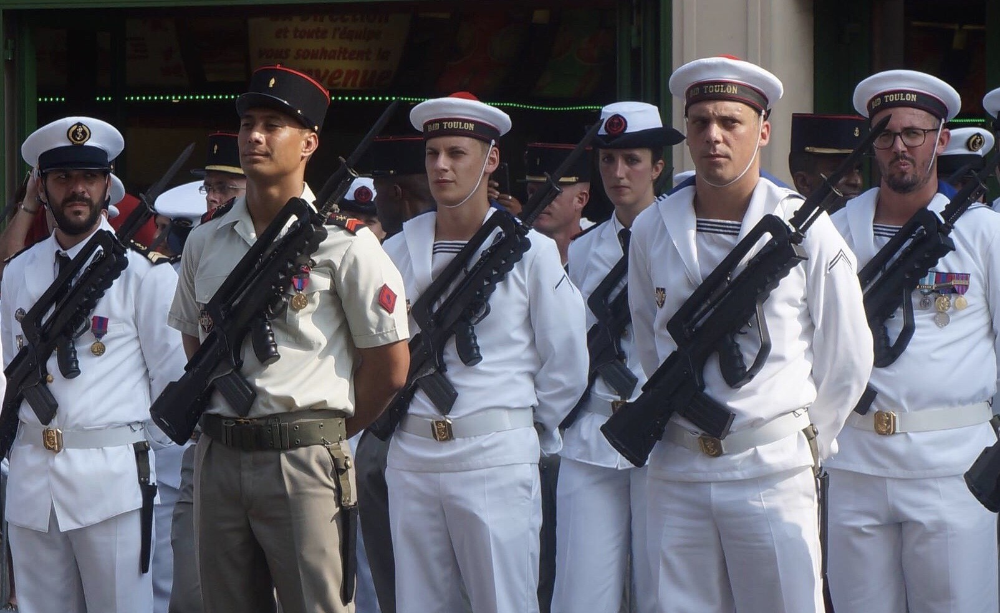

Parcours Militaire
2012 - 2016
Mon parcours militaire débute en 2012, direction Cherbourg pour mes 6 mois de classes.
À l'issue, ma première affectation était la base Aéronavale de Hyères les Palmiers.
Deux ans après je suis appelé en opération extérieure en Nouvelle-Calédonie à Plum pendant une durée de six mois.
Ma seconde affectation sera la Frégate Furtive "Guepratte" située à Toulon avec laquelle j'ai fais un bon nombre de missions notamment la "Meco" (mise en condions opérationnelles) au large de :
- la Syrie;
- Du Liban;
- L'Italie.
J'ai effectué pendant ces périodes de brèves missions avec d'autres bateaux comme le transport de chalands de débarquement
"Sirocco", le bâtiment de projection et de commandement "Tonnerre" ou bien le porte-avions "Charles-de-Gaulle".
J'ai acqueris une grande expérience et effectué de nombreux métiers annexes à ma spécialité :
- Pompier lourd;
- Tireur 12,7;
- Brancardié/secouriste;
- Brigade de protection.
Mon service dans l'armée aura été la chose la plus enrichissante que j'ai fais dans toute ma vie.
En 2016, je décide de ne pas reprolonger de dix ans mon contrat et je terminais donc ma courte carrière médaillé à deux reprises et le grade de Quartier Maître-Chef obtenu.